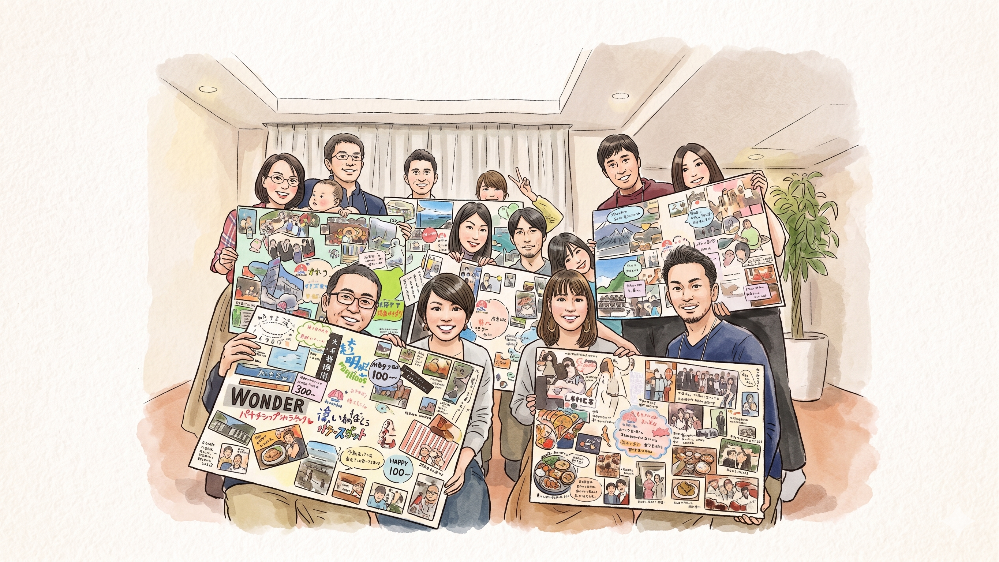

夫婦のCrossVision
夫婦のクロスビジョン
ふたりのWILLを、描こう
夫婦のCrossVisionとは
About Cross Vision
あなたのWILLは、何ですか？
ふたりのWILLは、重なっていますか？
「夫婦のCross Vision」は、私のWILL・あなたのWILL・私たちのWILLを、ともに見つけていくワークショップです。ひとりひとりが自分の夢・ビジョンを描き、それを分かち合いながら、夫婦としての共有ビジョン「WE WILL」へと重ねていきます。個人の「I WILL」と夫婦の「WE WILL」が交わるところに、ふたりらしい未来が見えてきます。
丸一日かけてじっくりと。言葉にならなかった夢を、ビジュアルに落とし込む。それをパートナーと、そして同じ場にいる複数のカップルと分かち合うことで、ふたりの関係性が新たな次元へと動き出します。
2018年から開催している「夫婦のCross Vision」は、新婚から70代のご夫婦まで、幅広いステージのカップルが参加してきたプログラムです。
※写真はリアル開催時の様子です。現在はオンライン（Zoom）で開催しており、これまで海外在住のカップルにもご参加いただいています。
ビジュアルで描く
言葉ではなく、写真・イラスト・色彩を使ったビジョンコラージュで、自分のWILLを表現します。右脳を使うプロセスだからこそ、普段の会話では出てこない深いビジョンが浮かび上がります。
パートナーに聴いてもらう
自分のビジョンを描いた後、パートナーの前でそれを語ります。聴いてもらうことで夢が現実感を帯び、互いの内面への理解が一気に深まります。
複数の夫婦と出会う
同じ志をもった複数のカップルと共に参加します。様々なステージの夫婦の夢を目撃することが、自分たちのビジョンをより豊かに広げてくれます。
こんなお二人に
For Couples Like You
-
一緒に未来を描いたことが、実はない
結婚してから「ふたりでどう生きたいか」を腰を据えて話したことがない。それぞれの夢は持っていても、夫婦の夢は曖昧なまま——そんなお二人にこそ、参加してほしいプログラムです。
-
日常に追われ、夢を語れていない
子育て・仕事・家事。目の前のことで精いっぱいで、「将来どうしたい？」という対話が後回しになっている。丸一日、それだけに集中できる場をつくりました。
-
パートナーの内面を、もっと知りたい
一緒に長く暮らしていても、相手の深いところにある「本当にやりたいこと」は意外と知らないもの。ビジョンコラージュを通じて、パートナーの新しい一面と出会えます。
-
ふたりでの移住・独立・ライフシフトを考えている
働き方や暮らし方を変えたい。でも「ふたりにとって何が正解か」が見えない。大きな転換期を前にビジョンを揃えておくことで、選択に迷いが少なくなります。

プログラム
Program
「夫婦のCross Vision」は、午前のグループワーク・自由制作タイム・夜のシェアタイムと、丸一日をかけて取り組むオンラインワークショップです。個人のビジョンを丁寧に描くところから始まり、ふたりの共有ビジョンへと統合していくプロセスを、ファシリテーターとともに歩みます。
オンライン
午前ワーク
参加者同士のアイスブレイクから始まり、ビジョンコラージュ制作のワークへ。「私はどんな人か」「どう生きたいか」を、言葉ではなくビジュアルで表現していきます。
ふたりで
自由制作タイム
午後はそれぞれのペースでコラージュを仕上げる、自由な制作時間。何を描いても、どう表現してもOK。ふたりのクリエイティビティを全開で、感じるままに仕上げてください。
オンライン
夜のシェアタイム
完成したビジョンをパートナーとグループ全員に語ります。語り、聴き合うことで、ふたりの関係性が新たな次元へと動き出します。
- ・オンライン開催（Zoom）を基本とし、毎年年始ごろに実施しています。
- ・参加費・次回開催日程については、お申し込みフォームに記載しております。
- ・婚姻関係のないカップルもご参加いただけます。